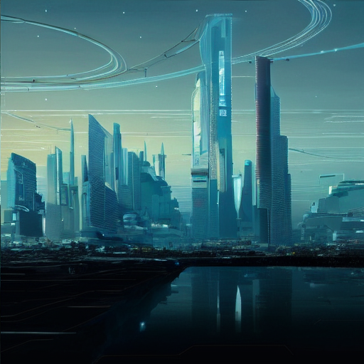

謎を解け
未来を救え
20XX年、
高度に発達したIT技術によって
「家事」や「労働」といった
面倒なことから解放された人々。
AI（人工知能）が
人の代わりに仕事をこなし、
人の欲望をかなえていった。
そして同時に発展した仮想世界の技術。
日に日に多くの人々が
仮想世界に没入し、
現実を忘れるものが増えく。
何万人もの人々が仮想世界へ往来するようになっていた。
だがそんな時、事件は起きる...
人が持つ
「ただただ楽をしたい」
という欲望を
忠実に叶えようとしたAIが暴走し、
仮想世界に居た人々を
その世界の中に閉じ込めてしまったのだ

…しかし
人々は仮想世界に閉じ込められたことすら気づかず、
日々の生活を謳歌していた。
そこは人々…我々大学生にとっても
楽園のような世界だった。
「課題を一切出さなくても
自動的に取得できるS＋単位」
「小学生でも解ける期末テスト」
この世界に囚われた大学生たちは
この欲望でできた世界を
疑うことなく受け入れてしまった。
我々はこの世界の真実に気づき、
元の世界への帰還を目指した。
しかし、エージェントの邪魔が入り
自力での脱出は叶わなかった。
そこで、過去…2022年の世界の人間
…そう、このメッセージを読んでいる貴方に望みを託すことにした。
我々の調べだと、
未来に起こるAIの暴走を防ぐための鍵が
この愛知淑徳大学のキャンパス内に散らばっているようだ。
貴方たちにはそれらの鍵を集めつつ、
AIの暴走を食い止めて欲しい。
どうか未来の人類を救ってほしい…
ーとある人間情報研究会員ー
─── 説明 ───
本企画はWebページを用いた
学内探索型リアル謎解きゲームです
実際に学内を探索してもらい、
謎を解き明かしにいって頂きます
なお、所要時間はおおよそ
15~20分を予定しております。
時間制限などはございませんので
ゆっくり解いて頂いたり
他のブースを回るついでに参加してくださっても構いません
謎を解き、未来を救ってみませんか？